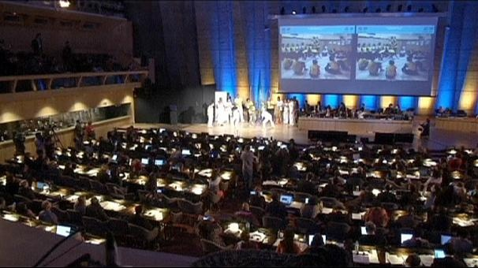

Включение круга капоэйры в список UNESCO
На девятой сессии Межправительственного комитета по охране нематериального культурного наследия, проходившей в Париже с 24 по 28 ноября 2014 года, состоялось знаменательное событие в жизни капоэйры. А именно, 26 ноября 2014 года список ЮНЕСКО «Нематериальное культурное наследие человечества» пополнился еще одним пунктом — „круг капоэйры“ (Roda de Capoeira).
Видео-презентация круга капоэйры, представленная комитету ЮНЕСКО:

В 2004 году капоэйра вошла в большую политику. И именно тогда начался долгий процесс признания круга капоэйры культурным наследием человечества. За десять лет исследователи капоэйры, носители культуры и политики сделали многое. Они не только провели описание (инвентаризацию) круга капоэйры, но также разработали стратегию охранных мероприятий и разработали структуру организации, которая будет разрабатывать, реализовывать и оценивать эффективность предпринятых мер.
В целом, стратегия охранных мероприятий сфокусирована на чествовании старых мастеров и сохранении традиционных аспектов передачи знаний в круге капоэйры.
То есть, капоэйра рассматривается как многогранная практика, делающая круг местом для обмена опытом, для обучения и для укрепления культурной уникальности. Естественно, что с подобной постановкой вопроса подчеркивается важность роли мастера в процессе передачи знаний и традиций.
Эта стратегия, можно сказать, эволюционировала из исторически сложившихся методов и средств «продвижения» капоэйры, использовавшихся сообществами/группами капоэйры, переняв лучшее из них:
- распространение сведений о круге капоэйры в средствах массовой информации;
- создание и поддержка групп и ассоциаций капоэйры;
- организация национальных и международных учебных семинаров и фестивалей;
- поощрение участия в программах помощи социально уязвимым слоям населения;
- поддержка партнерских отношений с муниципальными образовательными учреждениями;
- поиск и аттестация мастеров, создание карты, с отметкой их школ и мест проведения кругов капоэйры (картирования).Особенностями «новой» охранной политики являются масштабность мероприятий (реализуемых во все 27 субъектах Бразилии), большой бюджет (более 2 млн. долларов США) и активная поддержка государства.
Стоит также отметить, что управление охранной политикой, дальнейшая разработка мероприятий, их внедрение и оценка результатов будут осуществляться сообществом капоэйристов. Для этого будет создано специальное пространство для дискуссий, так называемый «делиберативный совет», в состав которого преимущественно будут входить представители различных групп капоэйры (в основном, мастера). Помимо капоэйристов в совет войдут представители Института Национального Исторического и Художественного Наследия Бразилии (IPHAN) и других партнерских организаций, в рамках работы которых и будут осуществляться охранные мероприятия.
Подробнее об охранных мероприятиях см. в тексте заявки. Саму заявку, а также другие бонусы, можно найти на официальном сайте ЮНЕСКО.
Таким образом, сохранение и развитие капоэйры стало делом не отдельного мастера, как это уже бывало, скажем, в начале ХХ века, а целого государства (в смысле Бразилии), и всего мирового сообщества капоэйристов.